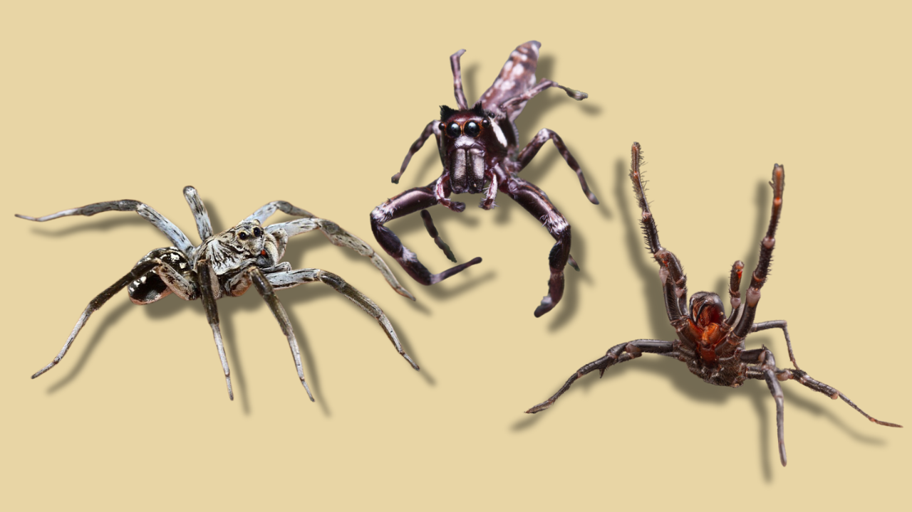

The Native Spiders of New South Wales
Welcome to the online guide to NSW's amazing spiders! We can help you identify and learn about these amazing creatures that you encounter in everyday life. Our guide covers species ranging from the deserts of the west, and the rainforests of the east, so you can get the info you need!
